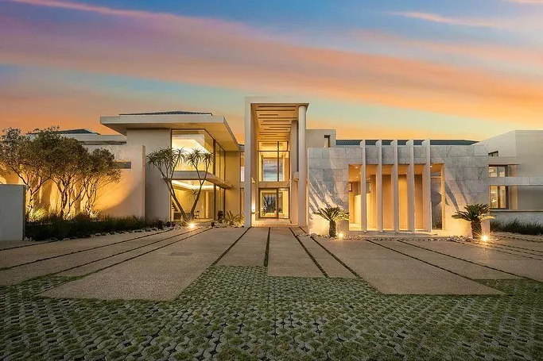

Six-Bedroom Residence, Waterfall Equestrian Estate
Featured February 2023, availability to be confirmed
6 bed6 bath12 garage
View ResidenceEye of Africa Golf & Residential Estate, Johannesburg, Gauteng
For SaleRef. 12LVE 117548729
Asking priceR 9 000 000
Marketed by Gabriel Masilo, 12LVE Property Group
Approximately US$562,770, €483,304, £414,207, as published on 27 August 2026. Rand price is definitive.
IParticulars
IIThe Residence
Designed for family living and easy entertaining, this contemporary home pairs bold architecture with generous living spaces and a true indoor-outdoor lifestyle.
A double-volume entrance leads to a finished kitchen with centre island and a separate scullery, an enclosed entertainment lounge and an expansive patio above a private pool. Upstairs, balconies take in elevated views across the estate.
IIISignature Features
IVPhotographs
The estate
VFinancial Details
VILocation
Gauteng. The exact address is shared by the marketing agent.
Eye of Africa is one of Johannesburg South's premier residential estates, set around the Greg Norman Signature Championship Golf Course, with walking and cycling trails, tennis, padel, a residents' gym, restaurants and a secure, family-focused environment.
Viewings are arranged by Gabriel Masilo of 12LVE Property Group.
Call 078 130 8585